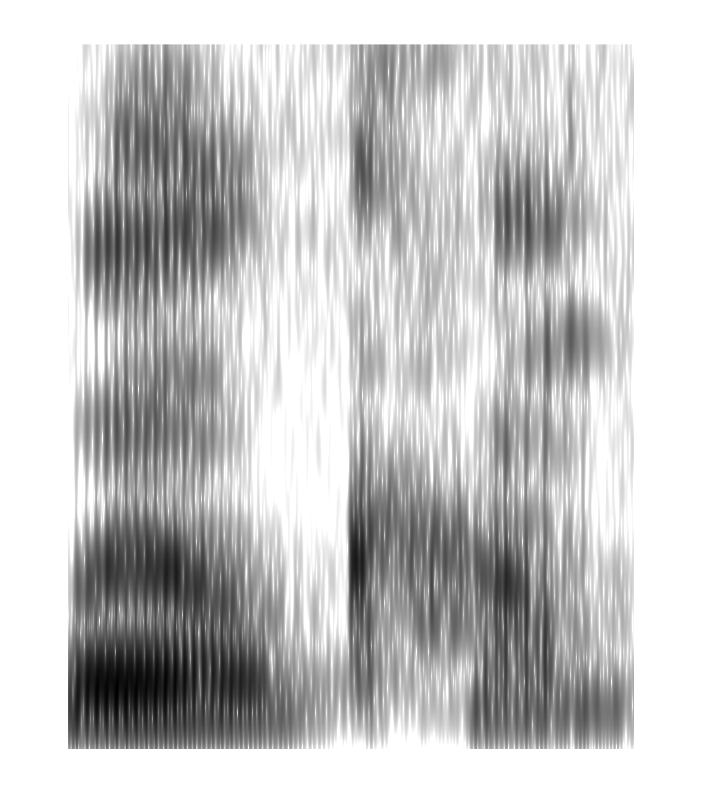

Zhe-chen Guo
Hello! I'm a Postdoctoral Scholar in Dr. Bharath Chandrasekaran's SoundBrain Lab at Northwestern University. My research revolves around phonetics and speech perception. I use a combination of behavioral, neurophysiological, and computational methods to explore how listeners process continuous speech in various listening conditions and how speech features are represented in the brain. Currently, I'm studying the neural encoding of phonemes and pitch accents through deep neural network modeling of speech-evoked EEG responses.
Prior to joining Northwestern, I earned my PhD in Linguistics from the University of Texas at Austin, where I conducted a series of experiments under the supervision of Dr. Rajka Smiljanic to examine clear speech benefits for word segmentation and coarticulation of clear speech across communicative contexts.
My CV here
See my work

Peer-reviwed journal papers:
- Guo, Z.-C., & Smiljanic, R. (under review). Ham or hamster? Eye-tracking evidence of clear speech benefit for word segmentation in quiet and in noise.
- Guo, Z.-C., & Smiljanic, R. (2023). Speakers coarticulate less in response to both real and imagined communicative challenges: An acoustic analysis of the LUCID corpus. Journal of Phonetics, 97, 101210. https://doi.org/10.1016/j.wocn.2022.101210
- Ou, S.-C., & Guo, Z.-C. (2022). The effect of lengthening aspiration on speech segmentation. JASA Express Letters, 2(4), 045202. https://doi.org/10.1121/10.0010242
- Guo, Z.-C., & Smiljanic, R. (2021). Speaking clearly improves speech segmentation by statistical learning under optimal listening conditions. Laboratory Phonology: Journal of the Association for Laboratory Phonology, 12(1), 14. https://doi.org/10.5334/labphon.310
- Guo, Z.-C., & Ou, S.-C. (2021). The use of tonal coarticulation in segmentation of artificial language speech: A study with Mandarin listeners. Applied Psycholinguistics, 42(3), 631–655. https://doi.org/10.1017/S0142716420000818
- Ou, S.-C., & Guo, Z.-C. (2021). The language-specific use of F0 rise in segmentation of an artificial language: Evidence from listeners of Taiwanese Southern Min. Language and Speech, 64(2), 437–466. https://doi.org/10.1177/0023830919886604
- Ou, S.-C., & Guo, Z.-C. (2021). The differential effects of vowel and onset consonant lengthening on speech segmentation: Evidence from Taiwanese Southern Min. The Journal of Acoustical Society of America, 149(3), 1866–1877. https://doi.org/10.1121/10.0003751
- Guo, Z.-C., & Ou, S.-C. (2014). Perception of articulatorily different Mandarin retroflexes by Japanese speakers: A pilot study. NTU Working Papers in Chinese Language Teaching, 2, 1–28. Taipei: National Taiwan University. http://dx.doi.org/10.6664%2fNTUTCSL.201408_(2).0004
- Ou, S.-C., & Guo, Z.-C. (2014). Mandarin retroflex sounds perceived by non-native speakers. Journal of Language and Literature Studies, 26, 41–76.
Peer-reviewed conference proceedings:
- Guo, Z.-C., & Smiljanic, R. (2023). Clear speech facilitates word segmentation: Evidence from eye-tracking. In Radek Skarnitzl & Jan Volín (Eds.), Proceedings of the 20th International Congress of Phonetic Sciences (pp. 177–181). Guarant International.
(Also orally presented, Prague, Czech, August 7–11) [paper]
- Ou, S.-C., & Guo, Z.-C. (2023). The effect of shortening onset consonants on speech segmentation by Taiwanese Southern Min listeners. In Radek Skarnitzl & Jan Volín (Eds.), Proceedings of the 20th International Congress of Phonetic Sciences (pp. 167–171). Guarant International.
(Also presented in poster format, Prague, Czech, August 7–11) [paper] [poster]
- Guo, Z.-C., & Smiljanic, R. (2021). Speakers coarticulate less when facing real and imagined communicative difficulties: An analysis of read and spontaneous speech from the LUCID corpus. In Proceedings of Interspeech 2021 (pp. 4009–4013). http://dx.doi.org/10.21437/Interspeech.2021-1640
(Also presented virtually, Brno, Czechia, August 30–September 3)
- Ou, S.-C., & Guo, Z.-C. (2020). The opposite effects of vowel and onset consonant lengthening on speech segmentation. In Proceedings of the 10th International Conference on Speech Prosody. https://doi.org/10.21437/SpeechProsody.2020-16
(Also presented virtually, Tokyo, Japan, May 24–28)
- Guo, Z.-C., & Ou, S.-C. (2019). The use of tonal coarticulation in speech segmentation by listeners of Mandarin. In S. Calhoun, P. Escudero, M. Tabain, & P. Warren (Eds.), Proceedings of the 19th International Congress of Phonetic Sciences (pp. 2017–2021).
(Also orally presented, Melbourne, Australia, August 4–10) [paper]
- Ou, S.-C., & Guo, Z.-C. (2019). The role of initial F0 rise in speech segmentation: A cross-linguistic study. S. Calhoun, P. Escudero, M. Tabain, & P. Warren (Eds.), Proceedings of the 19th International Congress of Phonetic Sciences (pp. 2916–2920).
(Also presented in poster format, Melbourne, Australia, August 4–10) [paper] [poster]
- Ou, S.-C., & Guo, Z.-C. (2015). The effect of stress on English word recognition by native speakers of typologically different languages. In The Scottish Consortium for ICPhS 2015, Proceedings of the 18th International Congress of Phonetic Sciences.
(Also orally presented, Glasgow, UK, August 10–14.) [paper]
*: Listed as citable abstract
- Guo, Z.-C., & Smiljanic, R. (2023). Clear speech benefit for word segmentation is modulated by contextual-semantic cues: Evidence from eye-tracking. The Psychonomic Society 64th Annual Meeting, San Francisco, California, November 16–19. [poster]
- *Guo, Z.-C., Pangottil, K., Chandrasekaran, B., & Llanos, F. (2023). Decoding speech envelopes from electroencephalographic recordings: A comparison of regularized linear regression and long short-term memory deep neural network. The Journal of the Acoustical Society of America, 153(3), A158. https://doi.org/10.1121/10.0018496
(Poster presentation at the 184th Meeting of the Acoustical Society of America, Chicago, May 8–12) [poster]
- *Guo, Z.-C., Smiljanic, R. (2023). Clear speech improves word segmentation in quiet and in noise: Evidence from visual-world eye-tracking. The Journal of the Acoustical Society of America, 153(3), A168. https://doi.org/10.1121/10.0018543
(Poster presentation at the 184th Meeting of the Acoustical Society of America, Chicago, May 8–12) [poster]
- *Guo, Z.-C., Smiljanic, R. (2022). Coarticulation is reduced in clear speech produced with protective face masks. The Journal of the Acoustical Society of America, 152(4), A286. https://doi.org/10.1121/10.0016295
(Poster presentation at the 183rd Meeting of the Acoustical Society of America, Nashville, December 5–9) [poster]
- Dai, S., Frank, K., Jess, N., Guo, Z.-C. (2022). Network effects on Twitter users' language use and issue disposition of CRT: A machine learning approach investigating the influence model. Paper presented at the 2022 Midwest Sociology of Education Conference, University of Notre Dame, Indiana, October 27–28.
- Guo, Z.-C., & Smiljanic, R. (2022). Coarticulatory vowel nasalization in read and listener-directed speech across communicative contexts: An analysis of the LUCID corpus. Paper presented at the 18th Conference on Laboratory Phonology (LabPhon 18), online conference, June 23–25
- Ou, S.-C., & Guo, Z.-C. (2022). Is onset-consonant lengthening a universal word beginning cue? A cross-linguistic study of English and French listeners. Paper presented virtually at the 29th Manchester Phonology Meeting, May 25–27.
- *Guo, Z.-C., & Smiljanic, R. (2022). The degree and time course of nasal coarticulation across communicative contexts: A study of the LUCID corpus.The Journal of the Acoustical Society of America, 151(4), A65. https://doi.org/10.1121/10.0010676
(Poster presentation at the 182nd Meeting of the Acoustical Society of America, Denver, May 23–27.) [poster]
- *Guo, Z.-C., & Smiljanic, R. (2021). Coarticulation across communicative contexts: An acoustic analysis of the LUCID corpus using spectral and temporal measures. The Journal of the Acoustical Society of America, 150(4), A70. https://doi.org/10.1121/10.0007659
(Poster presentation at the 181st meeting of the Acoustical Society of America, Seattle, November 29–December 3) [poster]
- Ou, S.-C., & Guo, Z.-C. (2021). The effect of aspiration lengthening on speech segmentation: An artificial language learning study. Paper presented virtually at the 28th Manchester Phonology Meeting, May 26–28. [abstract]
- *Guo, Z.-C. (2020). Tonal carryover assimilation is exploited as a speech segmentation cue in the case of cue conflict. The Journal of the Acoustical Society of America, 148(4), 2504–2504. https://doi.org/10.1121/1.5146952
(Virtual poster presentation at the 179th Meeting of the Acoustical Society of America, December 7–11) [poster]
- Ou, S.-C., & Guo, Z.-C. (2020). The effects of segment lengthening on speech segmentation. Paper presented at the 13th International Symposium on Taiwanese Languages and Teaching, National Tsing Hua University, Hsinchu, October 16–17.
- *Guo, Z.-C., & Smiljanic, R. (2019). Speaking clearly improves speech segmentation in optimal listening conditions. The Journal of the Acoustical Society of America, 146(4), 3052–3052. https://doi.org/10.1121/1.5137579
(Poster presentation at the 178th Meeting of the Acoustical Society of America, San Diego, California, December 2–6) [poster]
- Ou, S.-C., & Guo, Z.-C. (2018). The role of lexical tone in speech segmentation by listeners of Taiwanese Southern Min: A corpus and experimental study. Oral presentation at the 7th International Conference on Phonology and Morphology, Seoul, Korea, June 29–30.
- Ou, S.-C., & Guo, Z.-C. (2017). The language-specific use of F0 rise in speech segmentation by listeners of Taiwanese Southern Min. Oral presentation at 2017 ILAS Workshop on Phonetics and Phonology, Academia Sinica, Taipei, October 23–24.
- Ou, S.-C., & Guo, Z.-C. (2017). Is the cue of pitch rise to spoken word segmentation used in a language-specific or cross-linguistic way? A study of listeners of Taiwanese Southern Min. Oral presentation at the Phonetics and Phonology in Europe 2017, Cologne, Germany, June 12–14. [abstract]
- Ou, S.-C., & Guo, Z.-C. (2016). The use of lexical tone in spoken word segmentation by Taiwanese Southern Min listeners. Oral presentation at the 24th Annual Conference of the International Association of Chinese Linguistics, Beijing, China, July 17–19
- Guo, Z.-C. (2014). Perception of articulatorily different Mandarin retroflexes by Japanese speakers: A pilot study. Oral presentation at the 2nd NTU Postgraduate Conference on Teaching Chinese as a Second Language, National Taiwan University, Taipei, March 29.
Contact
Researcher profiles
Data repositories
Social media